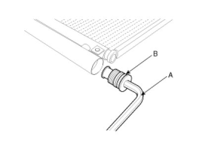
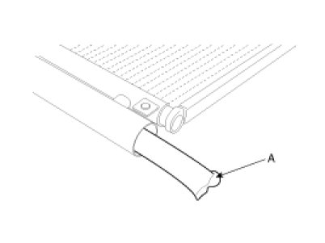

Receiver Dryer: Service and Repair
Replacement
1. Remove the condenser, and then remove the bottom cap (B) with L wrench (A) from the condenser.
Tightening torque :
9.8 - 14.7N.m (1.0 - 1.5kgf.m, 7.2 - 10.8lb-ft)

2. Remove the desiccant (A) from condenser using a long nose plier. Check for crumbled desiccant and clogged bottom cap filter.

3. Apply air conditioning compressor oil along the O-rings and threads of the new bottom cap.
4. Insert the new desiccant into the receiver drier tank. The desiccant must be sealed in vacuum before it is exposed to air for use.
5. Install the new bottom cap to the condenser.
NOTE:
- Always replace the desiccant and bottom cap at the same time.
- Replace the O-rings with new ones at each fitting, and apply a thin coat of refrigerant oil before installing them. Be sure to use the right O-rings for R-134a to avoid leakage.
- Be careful not to damage the radiator and condenser fins when installing the condenser.
- Be sure to install the lower mount cushions of condenser securely into the holes.
- Charge the system, and test its performance.